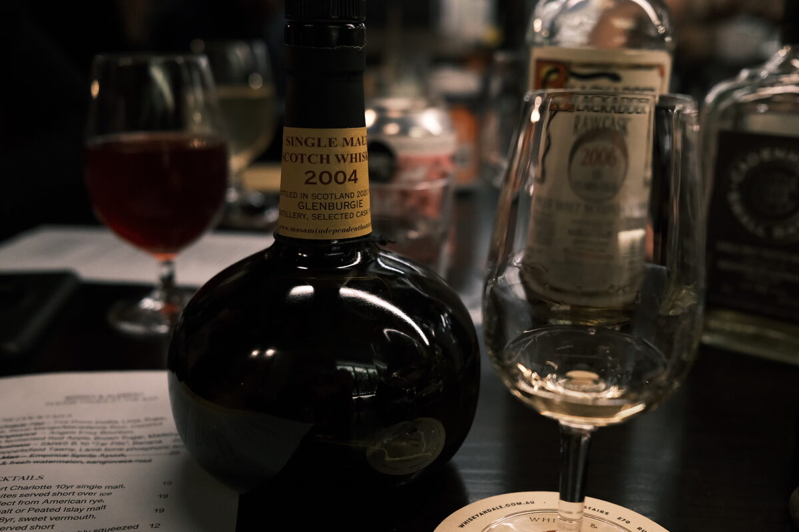

Glenburgie 2004 Samaroli 53.3% (bottled 2020)
Weird spherical bottle. Pretty tight lipped on the cask.
Colour Light gold.
Nose A little wax. Straw and hay. Marmalade and raisins. Miso! Peppermint. Malty. Honey. Orange peel.
Palate Very sweet. Ice cream and apple juice. Cinnamon, apple pie, raisin bread. With water very malty. Honey and caramel. Oak spices. Oily mouthfeel. A pinch of salt. Apples. A little floral. Really opens up with a bit of water.
Finish Menthol candies. Wafts of stewed apples and pears. A swirl of caramel, fresh bananas. Quite long, warming. A sprig of some herb. Oranges and berries.
Comments Nice stuff. Classic, malt forward. 85/100.

Posted by Dominic on 14 Jun 2021